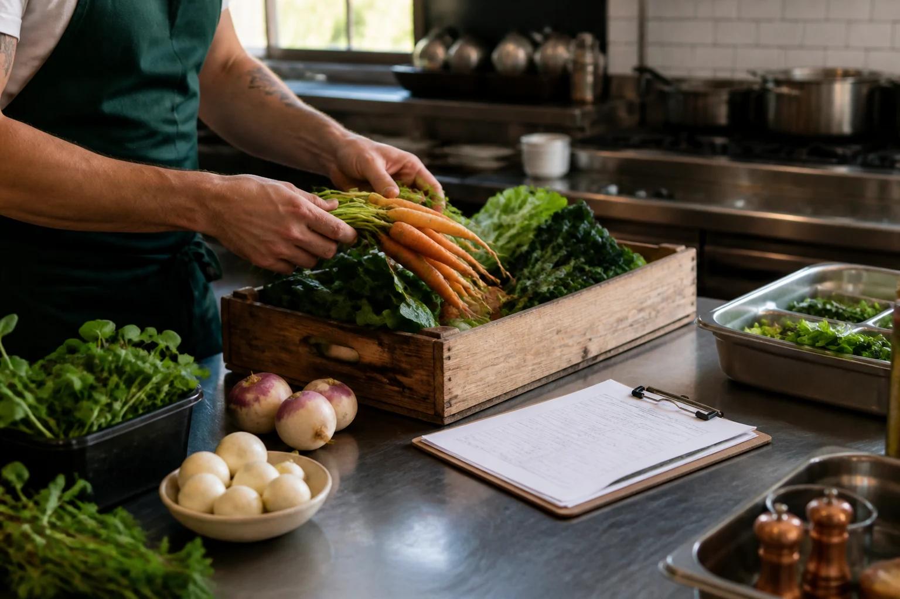

What happened?
Bring the operating facts together, with the source behind each number.
BUILT FOR THE INDEPENDENT OPERATOR
You put everything into your restaurant. You deserve a clearer picture of what it earns—and what needs your attention.
Project MISE is building operating intelligence that connects invoices, recipes, sales, and labor to explain what changed and help you decide what to do next.
In development. Built with restaurant operators.

Built from the kitchen.
Designed for the whole business.
01 / THE OPERATING REALITY
Your POS knows what sold. Your invoices know what you paid. Your recipes know what a plate should cost. The owner is left connecting the dots—usually between services.
Bring the operating facts together, with the source behind each number.
Understand the price changes, sales mix, and usage behind the movement.
See emerging margin pressure and the assumptions behind a forecast.
Focus on actions ranked by impact, confidence, urgency, and effort.
02 / OUR STARTING POINT
Financial clarity is the foundation.
Our first release is being designed to turn a focused set of restaurant records into a cost and profitability model you can understand, question, and use.
Initial product in development. Availability and onboarding are discussed with each design partner.
Sample menu item / Roast chicken
A higher purchase price adds $0.70 per plate. At 400 plates per month, that is $280 in additional ingredient cost.
Sample evidence: a prior invoice, a current invoice, a standardized recipe, and a monthly item-sales export.
Assumptions: 400 plates sold, unchanged portions and yield, and the same menu price. This example isolates ingredient cost; it excludes labor, overhead, and demand changes.
Suggested action: confirm the invoice price, compare an equivalent vendor quote, and review the recipe cost before making a pricing decision.
Fictional example, not a customer result or savings promise. Actual findings depend on your records.
03 / DESIGNED AROUND YOUR RECORDS
The planned onboarding starts with uploads and exports. The goal is useful insight from imperfect information, with unresolved questions made visible.
Recent vendor invoices, priority recipes, POS item sales, and a basic labor summary form the starting picture.
Review ingredient mappings, units, yields, and missing information before treating an estimate as a fact.
Understand the finding, inspect its evidence, and decide which action deserves your time.
04 / THE BROADER VISION
The Controller is the first step. Our long-term vision connects eight specialized roles around the same restaurant data, definitions, and evidence. These are planned capabilities.
Food cost, variance, profitability, and owner reporting.
Recipe integrity, yields, prep, and culinary execution.
Trends, forecasts, scenarios, and performance drivers.
Contribution, pricing, sales mix, and menu complexity.
Vendor comparison, credits, substitutions, and price movement.
Staffing, schedule variance, prep burden, and productivity.
Promotions informed by margin, inventory, and demand.
Unusual refunds, duplicate payments, and control exceptions for human review.
05 / A NOTE FROM CHEF CORY
Cory Phillips FOUNDER / PROJECT MISE
In a kitchen, everything has its place. The business deserves the same discipline.
I began my culinary apprenticeship at 16 and spent three decades in restaurants. Alongside the kitchen, I built a twenty-year career in technology and business intelligence.
Two decades ago, my partners and I created MisEnSoft to make recipe and plate costs clearer. The idea was sound. Keeping the data current required too much manual work.
Project MISE carries that lesson forward: respect the craft, connect the information, and make the next decision clearer. The ambition is enterprise-level intelligence for independent operators. The test is whether it helps someone run a healthier restaurant.
“Build something honest. Build something useful. Build something operators trust on their hardest days.”
OUR COMMITMENT
Show what is known, estimated, and missing. Explain the assumptions. Never promise a result the evidence cannot support.
Recommendations should serve the operator. Material decisions need human judgment, clear ownership, and follow-through.
A FEW PRACTICAL QUESTIONS
The Restaurant Controller is in development. This website introduces the project and opens conversations with potential design partners. There is no customer login or document-upload service on this site yet.
Our initial focus is financially engaged owners and operators with one to five locations, access to invoices, menus, recipes, and sales exports, and a willingness to give structured feedback.
The intended approach works with the records your existing systems produce. Early work is focused on uploads and exports. Specific integrations are still being determined.
Pricing and design partner terms are still being defined. We will discuss the scope, expectations, and any costs with you before you commit.
No. Project MISE is being built to support decisions and prepare better questions for the people you rely on. It does not replace licensed accountants, attorneys, tax professionals, or other regulated professionals.
The form prepares an email for you to review and send. This website does not store form entries or accept restaurant documents. Please do not include financial records, employee information, passwords, or other confidential material in your initial inquiry.
LET’S BUILD SOMETHING USEFUL
Help shape the Restaurant Controller around the decisions you make every week. Tell us a little about your restaurant and where you need more clarity.
cory@mcsatech.com